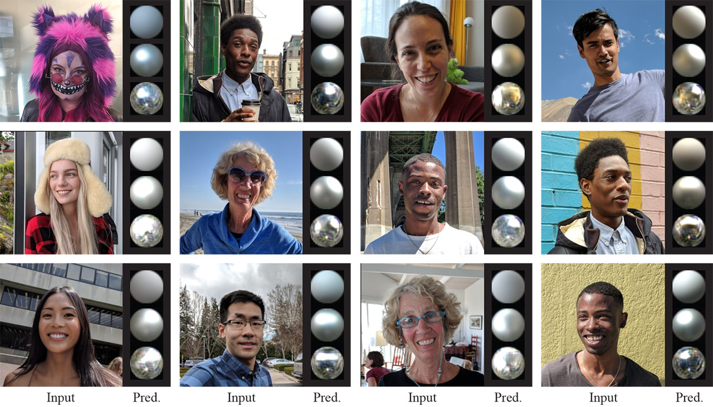
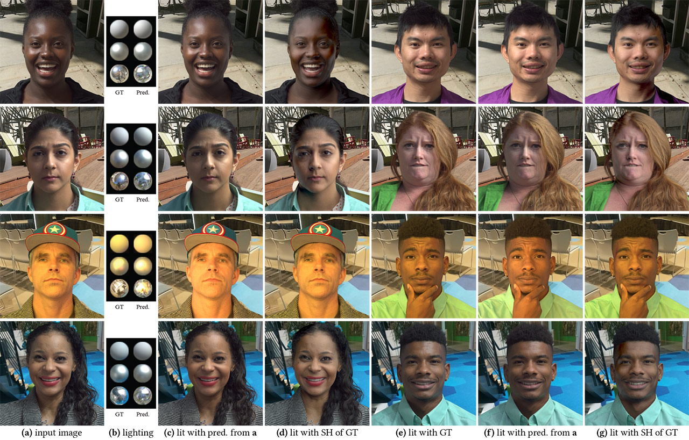

Click to download a PDF of the paper (14-page author version).
Abstract
We present a learning-based technique for estimating high dynamic range (HDR), omnidirectional illumination from a single low dynamic range (LDR) portrait image captured under arbitrary indoor or outdoor lighting conditions. We train our model using portrait photos paired with their ground truth environmental illumination. We generate a rich set of such photos by using a light stage to record the reflectance field and alpha matte of 70 diverse subjects in various expressions. We then relight the subjects using image-based relighting with a database of one million HDR lighting environments, compositing the relit subjects onto paired high-resolution background imagery recorded during the lighting acquisition. We train the lighting estimation model using rendering-based loss functions and add a multi-scale adversarial loss to estimate plausible high frequency lighting detail. We show that our technique outperforms the state-of-the-art technique for portrait-based lighting estimation, and we also show that our method reliably handles the inherent ambiguity between overall lighting strength and surface albedo, recovering a similar scale of illumination for subjects with diverse skin tones. We demonstrate that our method allows virtual objects and digital characters to be added to a portrait photograph with consistent illumination. Our lighting inference runs in real-time on a smartphone, enabling realistic rendering and compositing of virtual objects into live video for augmented reality applications.

Input in-the-wild portraits, with illumination estimated using our technique.
Diffuse, matte silver, and mirror spheres are rendered with our lighting inference.

(a) Inputs to our model, generated using image-based relighting and a photographed reflectance basis for each evaluation subject.
(b) Left: ground truth (GT) lighting used to generate a; Right: lighting estimated from a using our method. (c) The same subject lit with the predicted lighting. (d) The same subject lit with the 2nd order SH decomposition of the GT lighting. (e) A new subject lit with the GT lighting.
(f) The new subject lit with the illumination estimated from image a using our method. (g) The new subject lit with the 2nd order SH decomposition of the GT lighting. Our method produces lighting environments that can be used to realistically render virtual subjects into existing scenes, while the 2nd order SH lighting leads to an overly diffuse skin appearance.
For model comparisons, contact: chlobot [at] google.com
BibTeX
@inproceedings{10.1145/3410700.3425432,
author = {LeGendre, Chloe and Ma, Wan-Chun and Pandey, Rohit and Fanello, Sean and Rhemann, Christoph and Dourgarian, Jason and Busch, Jay and Debevec, Paul},
title = {Learning Illumination from Diverse Portraits},
year = {2020},
isbn = {9781450380805},
publisher = {Association for Computing Machinery},
address = {New York, NY, USA},
url = {https://doi.org/10.1145/3410700.3425432},
doi = {10.1145/3410700.3425432},
booktitle = {SIGGRAPH Asia 2020 Technical Communications},
articleno = {7},
numpages = {4},
keywords = {lighting estimation, inverse lighting},
location = {Virtual Event, Republic of Korea},
series = {SA '20}
}